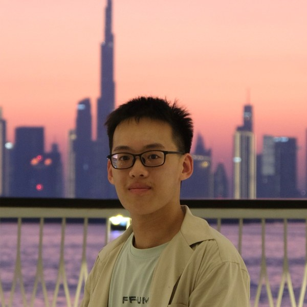
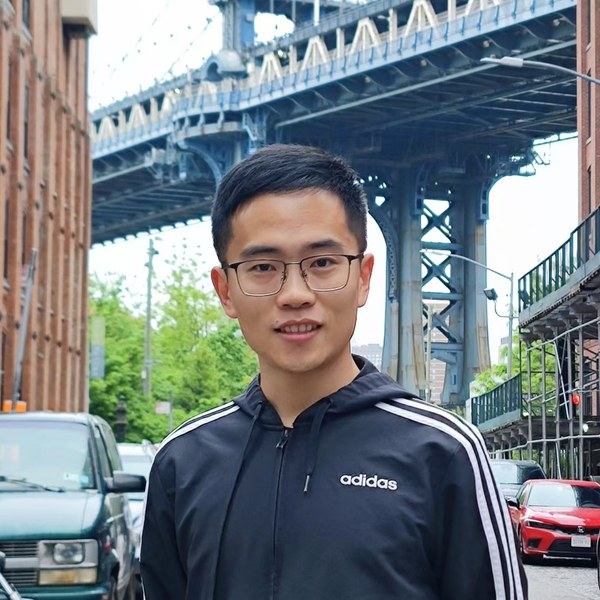

Scaling Functional Dexterity:
Grounding Generalization in Physical Interaction
Keywords: Functional Dexterity · Dexterous Manipulation · Scalable Robot Learning · Learning from Demonstration · Physical Interaction
Latest News
- Workshop pre-proposal submitted to ICRA 2027.
- Website launched — invited speakers and detailed program will be announced upon workshop acceptance.
Scope and Objectives
Functionality has long been considered in robotic manipulation, referring to the ability to produce intended physical effects of a task. Functional dexterity refers to the ability to achieve such functionality through dexterous, physically grounded interaction — establishing appropriate contacts, regulating motion and force, and reliably producing the intended physical effects that define a task's function. Dexterous hands are particularly important because many tools and everyday objects are designed around human hand capabilities, while multi-fingered actuation provides the controllability needed for diverse contacts, force distributions, and prescribed modes of interaction.
Recent robot foundation models have acquired general manipulation capabilities from large-scale data, yet limited sensing, scarce high-quality contact-rich data, and the difficulty of enforcing task constraints still limit performance in precise, contact-intensive manipulation. Model-based planning and control can explicitly encode task mechanics and physical constraints, but remain difficult to scale across broad task distributions.
This workshop asks a central question: how can dexterous manipulation scale across tasks and embodiments while remaining physically grounded in task functionality? We will bring together researchers in robot learning, large-scale demonstration and teleoperation, contact-rich manipulation, force and tactile sensing, and model-based planning and control.
Topics of interest include, but are not limited to
- Defining and evaluating functionality and functional dexterity
- Extracting functional intent from human demonstrations and teleoperation
- Learning-based and model-based approaches for contact-rich manipulation
- Force and tactile sensing for physically grounded interaction
- Model-based planning and control with explicit physical constraints
- Scaling and generalizing dexterous manipulation across tasks, embodiments, and interaction modes
- Robot foundation models for dexterous manipulation
- Sim-to-real transfer for functional dexterity
Invited Speakers
Speakers will be announced upon workshop acceptance.
To Be Announced
To Be Announced
To Be Announced
Program
Preliminary schedule; talk assignments will be announced with the speaker list.
| Time | Session | Activity |
|---|---|---|
| 09:00–09:05 | Opening | Welcome opening |
| 09:05–10:20 | Session 1: Scaling Manipulation Learning Three invited speakers, 20-min talk + 5-min Q&A each Focus on: few-shot adaptation; evidence and boundaries of functional generalization; with long-horizon, high success rate, and high robustness as targets. |
Invited talk 1 (TBA) |
| Invited talk 2 (TBA) | ||
| Invited talk 3 (TBA) | ||
| 10:20–10:50 | Poster Session & Coffee Break | A best poster award will be decided jointly by organizers and invited speakers, and the result will be announced at the end of the panel |
| 10:50–12:05 | Session 2: Grounding Physical Interaction Three invited speakers, 20-min talk + 5-min Q&A each Focus on: contact/force/tactile modeling and sensing; explicit physical constraints and closed-loop control; with functionality, force/contact quality, error recovery as targets. |
Invited talk 4 (TBA) |
| Invited talk 5 (TBA) | ||
| Invited talk 6 (TBA) | ||
| 12:05–12:50 | Panel Discussion | 45-min panel discussions and audience Q&A |
Organizers
Li Huang
Tsinghua University, China

Yongpeng Jiang
Tsinghua University, China
Jinzhou Li
Duke University, USA

Haichao Liu
Nanyang Technological University, Singapore
Xianyi Cheng
Duke University, USA
Qi Dou
The Chinese University of Hong Kong, Hong Kong SAR, China
Noman Naseer
Air University, Islamabad, Pakistan
Xiang Li
Tsinghua University, China
Contact
For any inquiries regarding the workshop, please feel free to reach out to the organizers:
- Li Huang – huang_li@mail.tsinghua.edu.cn
- Yongpeng Jiang – email TBA